- Exercise 17.17. Give the adjacency-matrix representations of the three
graphs depicted in Figure 17.2.
Here are the graphs from the figure together with their
adjacency-matrices:
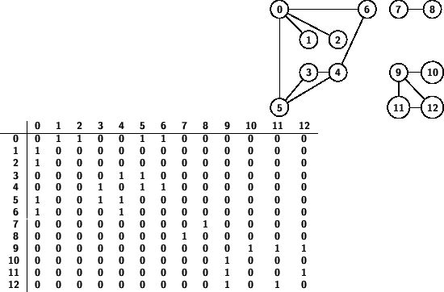
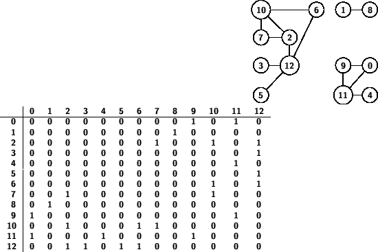
- Exercise 17.27. Show, in the style of Figure 17.10, the adjacency-lists
structure produced when you use Program 17.9 to insert the edges in the
graph
3-7 1-4 7-8 0-5 5-2 3-8 2-9 0-6 4-9 2-6 6-4
(in that order) into an initially empty graph.
The key point here is that the new edges are inserted at the
front of the adjacency lists. Here is the result:
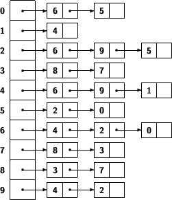
- Exercise 18.6. Show, in the style of Figure 18.5, a trace of the
recursive function calls made when a
cDFS<DenseGRAPH> object is
constructed for the graph
0-2 0-5 1-2 3-4 4-5 3-5.
Draw the corresponding DFS recursive-call tree.
First, here is a representation of the graph:
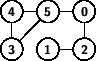
Now here is the desired trace. Note that the significance of using the
DenseGRAPH representation is that we will visit adjacent nodes in
increasing numerical order (as we read across a row of the adjacency
matrix).
012345
0-0 0*****
0-2 0*1***
2-0
2-1 021***
1-2
0-5 021**3
5-0
5-3 0214*3
3-4 021453
4-3
4-5
3-5
5-4
The DFS recursive-call tree is
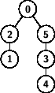
- Exercise 18.7. Show, in the style of Figure 18.6, the progress of the
search for the example in Exercise 18.6.
The recursive-call tree is shown above, so I won't repeat it here.
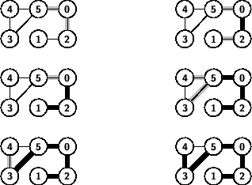
- Exercise 18.15. Draw the DFS forest that results from a standard
adjacency-matrix DFS of the graph
3-7 1-4 7-8 0-5 5-2 3-8 2-9 0-6 4-9 2-6 6-4.
Note that this is the same graph from Exercise 17.27. Here is a
representation of the graph:
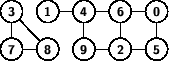
Performing a depth-first search using the adjacency matrix results in
starting from node 0 and following the path to the smallest numbered
not-already-visited adjacent node at each step, backing up to try
larger unvisited nodes at the end. Here is the resulting DFS forest:
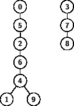
- Exercise 18.16. Draw the DFS forest that results from a standard
adjacency-lists DFS of the graph
3-7 1-4 7-8 0-5 5-2 3-8 2-9 0-6 4-9 2-6 6-4.
The difference between this and the last problem is that the
adjacency lists will store the edges in reverse order from how they were
entered. Exercise 17.27 figured out the lists; here is the resulting
DFS forest:
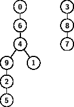
- Exercise 18.50. Draw the BFS forest that results from a standard
adjacency-lists BFS of the graph
3-7 1-4 7-8 0-5 5-2 3-8 2-9 0-6 4-9 2-6 6-4.
With the same graph as the previous two problems but using a queue
instead of a stack (in fact, I didn't use a stack for the DFS exercises,
since that would have reversed the order of the adjacent nodes and
messed up the distinction between the matrix and list representations;
instead, I used the recursive version of DFS) we get the following BFS
forest:
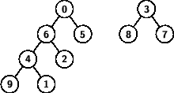
- Exercise 18.51. Draw the BFS forest that results from a standard
adjacency-matrix BFS of the graph
3-7 1-4 7-8 0-5 5-2 3-8 2-9 0-6 4-9 2-6 6-4.
Finally, using the increasing numeric order to visit adjacent nodes that
comes with the adjacency matrix, we get the following BFS forest:
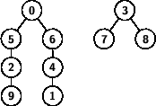